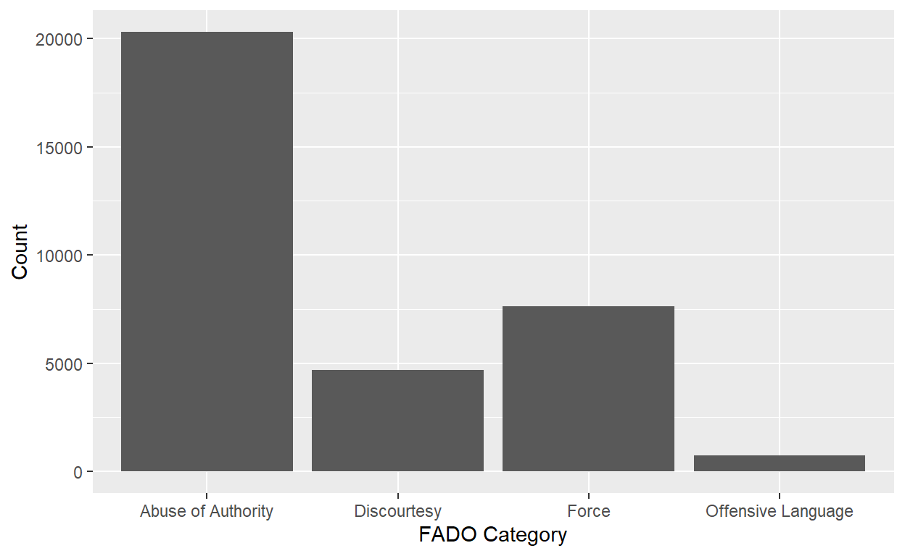
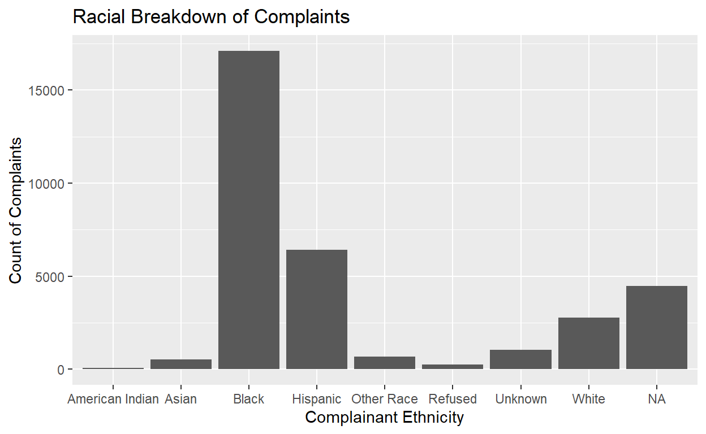
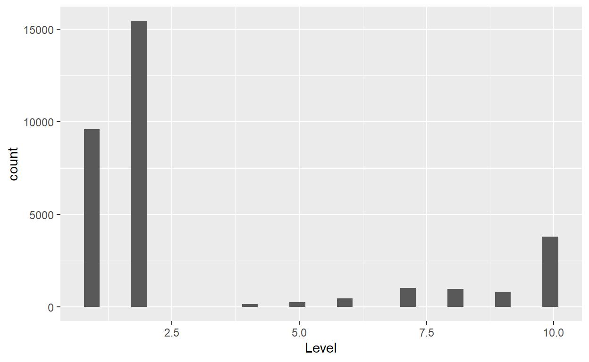
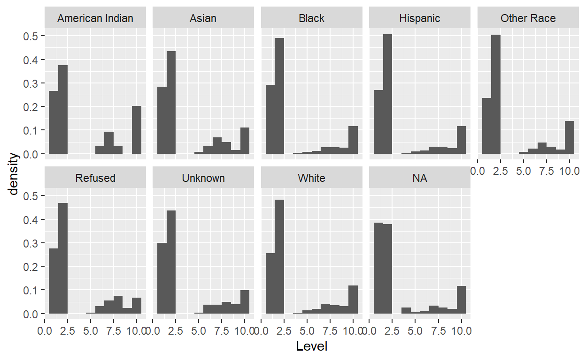
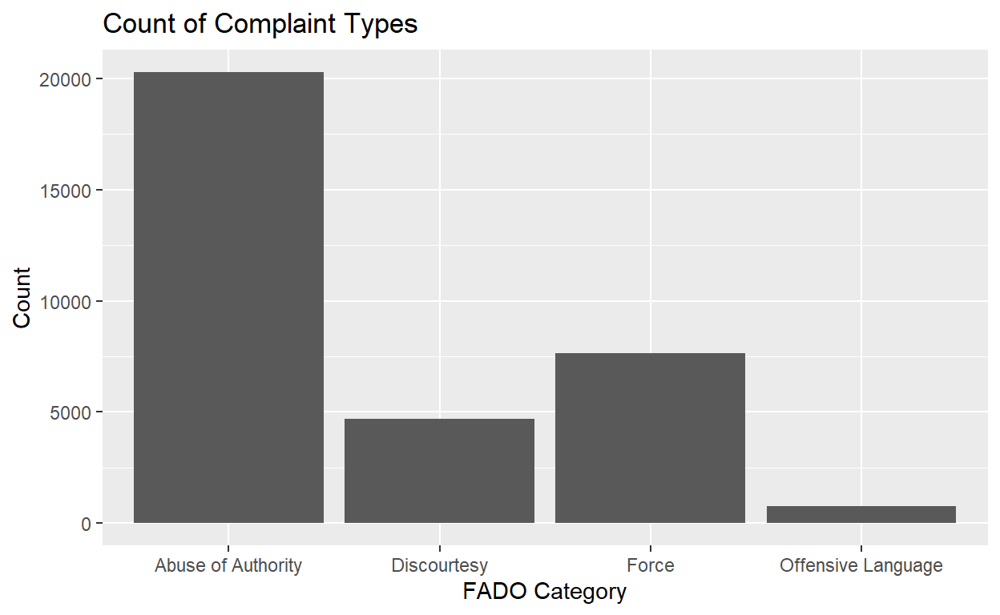
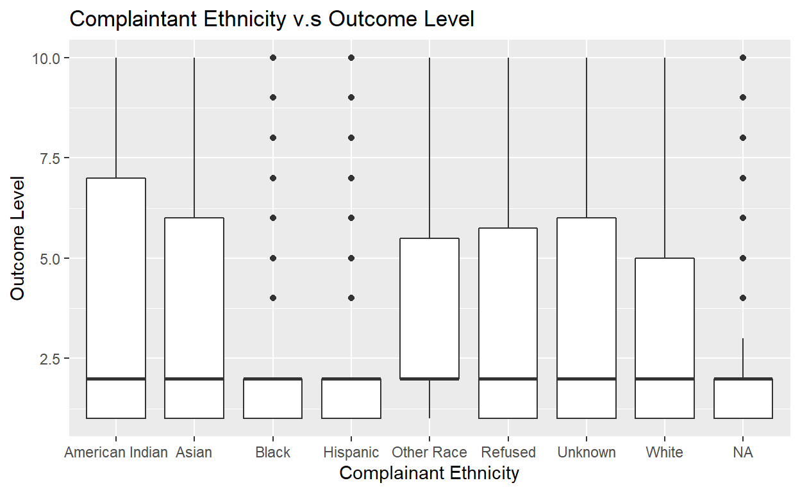

Project thoughts
I am interested in exploring data related to whether there is an increase in incarceration around presidential election times and then compare this to typically blue and red states. I also would be interested in exploring data related to how new voters and voters who turned out in one or both previous elections voted in the 2020 presidential election with a detailed portrait of the demographic composition and vote choices of the 2020 electorate.
Milestone 2
-Change in Question
After New York state repealed the New York legal statute which protected police disciplinary records, known as 50-a, a records request was submitted with New York City’s Civilian Complaint Review Board which investigates public complaints on the conduct of NYPD officers. This request produced records about closed cases for every police officer still on the force as of late June 2020 who had at least one substantiated allegation against them. The records span decades, from September 1985 to January 2020.
The question that I am interested in investigating is how the type of complaint affects the outcome of board’s decision on the substance of the complaint? In other words, I plan to examine the extent the nature of a complaint produces trends in the review board’s decisions. For example, if complaints of excessive force, racial prejudice, or others result in higher rates of substantiated decisions from the Board. I hypothesize that inappropriate verbal conduct on the basis of gender and race will result in less substantiated decisions as historically those often go unaddressed. I believe that when there is a violation of rights such as unlawful entrance into a home, excessive force, or another outright abuse of authority there will be more substantiated decisions made by the Board as these actions are reflective of the New York police department as a whole and not the actions of an individual police officer.
My sample is a database of more than 12,000 civilian complaints filed against New York City police officers spanning from 1985 to 2020.Each record in the data lists the name, rank, shield number, and precinct of each officer as of today and at the time of the incident; the age, race and gender of the complainant and the officer; a category describing the alleged misconduct; and whether the CCRB concluded the officers’ conduct violated NYPD rules. My unit of analysis is the New York City police department. The explanatory variable of interest is the nature of the complaint made against a police officer. The variable is coded under fado_type as discourtesy, abuse of authority, and force with more specific descriptions like frisking attached. My outcome variable is the outcome of the review board’s investigation of the complaint. Namely, the review board can rule that the complaint was substantiated which means the alleged misconduct occurred and violated the rules, they could rule an exoneration which means the alleged conduct occurred but did not violate NYPD laws, or unsubstantiated which means they could not conclude the conduct occurred. This variable is measured from Propublica’s data base and relies on the CRRB’s data. If I observe greater counts of substantiated claims for force or abuse of authority related complaints , this would provide support for my hypothesis. If, on the other hand, I observe less substantiated claims or similar amount of complaints for discourtesy, this would provide evidence against my hypothesis. When I run my regression of CRRB claim decision on the forceful nature of complaint indicator variable, a positive, significant coefficient would indicate support for my hypothesis.
library(tidyverse)
library(readr)
CCRB <- read_csv("C:/Users/User/Downloads/CCRB.csv")
Complaints <- CCRB |>
group_by(`FADO Category`)|>
summarize(Count = sum(`Count of records`))
Complaints# A tibble: 4 × 2
`FADO Category` Count
<chr> <dbl>
1 Abuse of Authority 20292
2 Discourtesy 4677
3 Force 7635
4 Offensive Language 753Allegation_Distribution <- Complaints|>
ggplot(mapping = aes(x = `FADO Category`, y = Count)) +
geom_col()
Allegation_Distribution
library(readr)
Allegations <- read_csv("C:/Users/User/Downloads/allegations.csv")
Allegations_Race <- Allegations |>
group_by(fado_type, complainant_ethnicity)|>
summarize(Count=n())
Allegations_Race# A tibble: 36 × 3
# Groups: fado_type [4]
fado_type complainant_ethnicity Count
<chr> <chr> <int>
1 Abuse of Authority American Indian 48
2 Abuse of Authority Asian 330
3 Abuse of Authority Black 10359
4 Abuse of Authority Hispanic 3676
5 Abuse of Authority Other Race 390
6 Abuse of Authority Refused 173
7 Abuse of Authority Unknown 580
8 Abuse of Authority White 1677
9 Abuse of Authority <NA> 3059
10 Discourtesy American Indian 8
# … with 26 more rowsVisualize <- Allegations_Race |>
ggplot(mapping = aes(x = complainant_ethnicity, y = Count )) +
geom_col() +
labs(x = "Complainant Ethnicity", y = "Count of Complaints", title = "Racial Breakdown of Complaints")
Visualize
The above data visualization of the complaint ethnicity v.s the count of complaints is important in answering my research question as it situates the importance and stakes of my findings. Within the graph, we can clear see that Black and Hispanic people respectively submit the most complaints within the time period which is indicative of the fact that they are most at risk for any inconsistencies in outcome of reviews by the board. It is also important to take into account the tibble which reports the count of complaints by race and it reports that for every type of FADO type, Black people have the highest amount of complaints. From offensive language, force, discourtesy, to abuse of authority, the data suggests that Black people bear the brunt of the dissatisfaction with the police force which is important in applying nuance and layers of analysis to the type of complaints that receive substantiated decisions. Moving forward, I’d be interested in taking a random sample of complaints from each category and calculating the proportion of substantiated complaints for each race.
unique(Allegations$board_disposition) [1] "Substantiated (Command Lvl Instructions)"
[2] "Substantiated (Charges)"
[3] "Substantiated (Command Discipline A)"
[4] "Substantiated (Formalized Training)"
[5] "Unsubstantiated"
[6] "Exonerated"
[7] "Substantiated (Command Discipline B)"
[8] "Substantiated (Instructions)"
[9] "Substantiated (Command Discipline)"
[10] "Substantiated (No Recommendations)"
[11] "Substantiated (MOS Unidentified)" allegations <- Allegations|>
mutate( Level = case_when(board_disposition == "Exonerated" ~ 1
,board_disposition == "Unsubstantiated" ~ 2,board_disposition == "Substantiated (MOS Unidentified)" ~ 3,
board_disposition == "Substantiated (No Recommendations)" ~ 4,
board_disposition == "Substantiated (Instructions)"~ 5,
board_disposition == "Substantiated (Command Lvl Instructions)" ~ 6,
board_disposition == "Substantiated (Formalized Training)" ~ 7,
board_disposition == "Substantiated (Command Discipline A)" ~ 8,
board_disposition == "Substantiated (Command Discipline B)"~ 9,
board_disposition == "Substantiated (Charges)" ~ 10))
allegations# A tibble: 33,358 × 28
unique_mo…¹ first…² last_…³ comma…⁴ shiel…⁵ compl…⁶ month…⁷ year_…⁸
<dbl> <chr> <chr> <chr> <dbl> <dbl> <dbl> <dbl>
1 10004 Jonath… Ruiz 078 PCT 8409 42835 7 2019
2 10007 John Sears 078 PCT 5952 24601 11 2011
3 10007 John Sears 078 PCT 5952 24601 11 2011
4 10007 John Sears 078 PCT 5952 26146 7 2012
5 10009 Noemi Sierra 078 PCT 24058 40253 8 2018
6 10012 Paula Smith 078 PCT 4021 37256 5 2017
7 10014 Malachy Sulliv… 078 PCT 4143 33969 11 2015
8 10017 Fazle Tanim 078 PCT 15187 40070 8 2018
9 10017 Fazle Tanim 078 PCT 15187 41927 3 2019
10 10017 Fazle Tanim 078 PCT 15187 41927 3 2019
# … with 33,348 more rows, 20 more variables: month_closed <dbl>,
# year_closed <dbl>, command_at_incident <chr>,
# rank_abbrev_incident <chr>, rank_abbrev_now <chr>,
# rank_now <chr>, rank_incident <chr>, mos_ethnicity <chr>,
# mos_gender <chr>, mos_age_incident <dbl>,
# complainant_ethnicity <chr>, complainant_gender <chr>,
# complainant_age_incident <dbl>, fado_type <chr>, …library(broom)
fit.allegations <- lm(Level ~ complainant_ethnicity, data = allegations)
fit.allegations
Call:
lm(formula = Level ~ complainant_ethnicity, data = allegations)
Coefficients:
(Intercept) complainant_ethnicityAsian
4.1406 -0.6492
complainant_ethnicityBlack complainant_ethnicityHispanic
-0.9414 -0.9018
complainant_ethnicityOther Race complainant_ethnicityRefused
-0.6489 -0.8532
complainant_ethnicityUnknown complainant_ethnicityWhite
-0.7393 -0.6976 summary(fit.allegations)
Call:
lm(formula = Level ~ complainant_ethnicity, data = allegations)
Residuals:
Min 1Q Median 3Q Max
-3.141 -2.199 -1.199 -1.199 6.801
Coefficients:
Estimate Std. Error t value Pr(>|t|)
(Intercept) 4.1406 0.3874 10.689 <2e-16
complainant_ethnicityAsian -0.6492 0.4103 -1.582 0.1136
complainant_ethnicityBlack -0.9414 0.3881 -2.426 0.0153
complainant_ethnicityHispanic -0.9018 0.3894 -2.316 0.0206
complainant_ethnicityOther Race -0.6489 0.4055 -1.600 0.1096
complainant_ethnicityRefused -0.8532 0.4334 -1.968 0.0490
complainant_ethnicityUnknown -0.7393 0.3992 -1.852 0.0641
complainant_ethnicityWhite -0.6976 0.3919 -1.780 0.0751
(Intercept) ***
complainant_ethnicityAsian
complainant_ethnicityBlack *
complainant_ethnicityHispanic *
complainant_ethnicityOther Race
complainant_ethnicityRefused *
complainant_ethnicityUnknown .
complainant_ethnicityWhite .
---
Signif. codes: 0 '***' 0.001 '**' 0.01 '*' 0.05 '.' 0.1 ' ' 1
Residual standard error: 3.099 on 28182 degrees of freedom
(5168 observations deleted due to missingness)
Multiple R-squared: 0.001066, Adjusted R-squared: 0.0008175
F-statistic: 4.295 on 7 and 28182 DF, p-value: 9.298e-05library(broom)
fit1.allegations <- lm(complainant_age_incident ~ complainant_ethnicity, data = allegations)
summary(fit1.allegations)
Call:
lm(formula = complainant_age_incident ~ complainant_ethnicity,
data = allegations)
Residuals:
Min 1Q Median 3Q Max
-4327.3 -9.3 -2.3 8.2 69.2
Coefficients:
Estimate Std. Error t value Pr(>|t|)
(Intercept) 31.9687 3.5555 8.991 <2e-16
complainant_ethnicityAsian 2.3576 3.7652 0.626 0.531
complainant_ethnicityBlack 0.3246 3.5622 0.091 0.927
complainant_ethnicityHispanic -0.1402 3.5734 -0.039 0.969
complainant_ethnicityOther Race 0.1542 3.7202 0.041 0.967
complainant_ethnicityRefused 3.3765 3.9814 0.848 0.396
complainant_ethnicityUnknown -5.6550 3.6892 -1.533 0.125
complainant_ethnicityWhite 4.7792 3.5965 1.329 0.184
(Intercept) ***
complainant_ethnicityAsian
complainant_ethnicityBlack
complainant_ethnicityHispanic
complainant_ethnicityOther Race
complainant_ethnicityRefused
complainant_ethnicityUnknown
complainant_ethnicityWhite
---
Signif. codes: 0 '***' 0.001 '**' 0.01 '*' 0.05 '.' 0.1 ' ' 1
Residual standard error: 28.44 on 28328 degrees of freedom
(5022 observations deleted due to missingness)
Multiple R-squared: 0.003877, Adjusted R-squared: 0.00363
F-statistic: 15.75 on 7 and 28328 DF, p-value: < 2.2e-16library(broom)
fit2.allegations <- lm(Level ~ fado_type , data = allegations)
summary(fit2.allegations)
Call:
lm(formula = Level ~ fado_type, data = allegations)
Residuals:
Min 1Q Median 3Q Max
-2.577 -1.577 -1.394 -0.394 7.606
Coefficients:
Estimate Std. Error t value Pr(>|t|)
(Intercept) 3.57699 0.02185 163.718 < 2e-16 ***
fado_typeDiscourtesy -0.39583 0.05036 -7.861 3.94e-15 ***
fado_typeForce -1.18302 0.04142 -28.559 < 2e-16 ***
fado_typeOffensive Language -0.51533 0.11421 -4.512 6.44e-06 ***
---
Signif. codes: 0 '***' 0.001 '**' 0.01 '*' 0.05 '.' 0.1 ' ' 1
Residual standard error: 3.062 on 32503 degrees of freedom
(851 observations deleted due to missingness)
Multiple R-squared: 0.02461, Adjusted R-squared: 0.02452
F-statistic: 273.3 on 3 and 32503 DF, p-value: < 2.2e-16# A tibble: 3,996 × 2
unique_mos_id Total_Count
<dbl> <int>
1 2 10
2 5 3
3 11 5
4 21 8
5 23 14
6 28 5
7 38 3
8 43 5
9 73 2
10 83 8
# … with 3,986 more rowsallegations|>
ggplot(aes(x=Level)) +
geom_histogram()
allegations|>
ggplot(aes(x=complainant_ethnicity, y= Level))+
geom_boxplot()
[1] 2[1] 2allegations|>
ggplot(aes(x=Level)) +
geom_histogram(aes(y=..density..), binwidth = 1)+
facet_wrap(~complainant_ethnicity, nrow=2)
Final Report
Darlene Uzoigwe GOV 50 Dan Baissa 14 December 2022 Project Report Introduction
In the aftermath of the tragic death of George Floyd at the hands of police enforcement, protests across the globe erupted, calling for racial justice and the end of anti-black violence.This outcry for change has resulted in drastic developments such as the dismantling of police departments as the institutional treatment of black Americans by police departments and officers pushed to the forefront of national debate. Proponents of this racial movement such as BLM Founder Alica Garza suggest that the outcry is long-overdue in ushering in accountability for the abuse of African-Americans by the hands of law officers. However, there are those who believe that the criminal justice system and internal review process of our police departments are capable of identifying misconduct and acting accordingly. Under this premise, racially motivated police misconduct are the actions of a few as opposed to a reflection of the entire police system, thus, radical changes are uncalled for. In determining the necessity of a solution, we must examine the problem at hand. Thus, this data research investigates the degree to which the race of a complainant affects the outcome of a review board’s decision on the substance of the complaint? In other words, the statistical extent to which the race of the complainant produces significant trends in the complainant review board’s decisions. This inquiry is relevant and of interest due to the financial investment the government applies to police enforcement. Over the past three decades, U.S. cities have allocated larger and larger shares of their budgets towards law enforcement. Today, the U.S. collectively spends $100 billion a year on policing and a further $80 billion on incarceration. Even though crime levels have dropped substantially over the last 30 years in line with the spending uptake, a report released last month argues that this occurred in spite of higher police budgets. Statistical evidence of a racial indicator of review outcomes could be useful in the progression of the call for change. In the light of recent debates of BLM, the initial hypothesis is that black and Hispanic complainants will correspond with lower levels of severity in review board decisions due to the discrimination and bias often perpetuated against them as well as the history of stop-and-frisk which disproportionately affects these demographics. The regression of the level of CRRB board decision against the race of the complainant variable should produce a negative, significant coefficient if it supports the hypothesis.
Throughout this inquiry, the data set reference was obtained from the New York City Civilian Complaint Review Board. After New York state repealed the New York legal statute which protected police disciplinary records, known as 50-a, a records request was submitted with New York City’s Civilian Complaint Review Board which investigates public complaints on the conduct of NYPD officers. This request produced records about closed cases for every police officer still on the force as of late June 2020 who had at least one substantiated allegation against them. The records span decades, from September 1985 to January 2020. The database contains more than 12,000 civilian complaints filed against New York City police officers. Each record in the data lists the name, rank, shield number, and precinct of each officer as of today and at the time of the incident; the age, race and gender of the complainant and the officer; a category describing the alleged misconduct; and whether the CCRB concluded the officers’ conduct violated NYPD rules. My unit of analysis is the New York City police department and this is a cross-sectional. The independent variable of interest is the race of the complainant in the record. The dependent variable of interest is the severity of the outcome administered to the police officer in question on a 1 to 8 scale. The review board can rule that the complaint was substantiated which means the alleged misconduct occurred and violated the rules, they could rule an exoneration which means the alleged conduct occurred but did not violate NYPD laws, or unsubstantiated which means they could not conclude the conduct occurred.The variable coded under fado_type describes different types of misconduct such as discourtesy, abuse of authority, and force with more specific descriptions like frisking attached. However, the board could rule that the police officer is exonerated, that the claim is unsubstantiated, the claim is substantiated but the police officer is unidentified, the claim is substantiated but with no outline recommendations, substantiated with reprimanding instructions, substantiated to the extent of command level instructions, substantiated to the extent of formalized training, substantiated to Command Discipline A, substantiated to Command Discipline B, and Substantiated to the point of criminal charges. This chain of consequences is ordered in increasing severity and was coded as such within the data on a 1-8 scale for regression purposes. The histogram summarizes the dependent variable and shows the distribution of the board levels with a level of 2 as the most common outcome.
allegations|>
ggplot(aes(x=Level)) +
geom_histogram()Results Section
In investigating this inquiry, a series of visual demonstrations of the data were produced. Below is a bar plot which depicts the total counts of each fado_type of complaint within the data sample including abuse of authority, discourtesy, force, and offensive language. According to this bar plot, the highest complaint type is abuse of authority with over 20,000 complaints. The second bar plot entitled ” Racial Breakdown of Complaints” shows the total counts of complaints for each racial demographic, revealing the two highest complainant groups to be Black and Hispanic. Black individuals reaching over 15,000 complaints as opposed to the less than 5000 among white complainants. This suggests the issue of police misconduct to be understood as a prevalent issue within the black community.
library(tidyverse)
library(readr)
CCRB <- read_csv("C:/Users/User/Downloads/CCRB.csv")
Complaints <- CCRB |>
group_by(`FADO Category`)|>
summarize(Count = sum(`Count of records`))
Complaints# A tibble: 4 × 2
`FADO Category` Count
<chr> <dbl>
1 Abuse of Authority 20292
2 Discourtesy 4677
3 Force 7635
4 Offensive Language 753Allegation_Distribution <- Complaints|>
ggplot(mapping = aes(x = `FADO Category`, y = Count)) +
geom_col()+
labs(title = "Count of Complaint Types")
Allegation_Distribution
library(readr)
Allegations <- read_csv("C:/Users/User/Downloads/allegations.csv")
Allegations_Race <- Allegations |>
group_by(fado_type, complainant_ethnicity)|>
summarize(Count=n())
Allegations_Race# A tibble: 36 × 3
# Groups: fado_type [4]
fado_type complainant_ethnicity Count
<chr> <chr> <int>
1 Abuse of Authority American Indian 48
2 Abuse of Authority Asian 330
3 Abuse of Authority Black 10359
4 Abuse of Authority Hispanic 3676
5 Abuse of Authority Other Race 390
6 Abuse of Authority Refused 173
7 Abuse of Authority Unknown 580
8 Abuse of Authority White 1677
9 Abuse of Authority <NA> 3059
10 Discourtesy American Indian 8
# … with 26 more rowsBeyond racial demographics and complaint categories, visual representations of the main relationship of interest was produced alongside a main regression of interest. The box plot entitled Complainant Ethnicity v.s Outcome Level, shows that the median level for each of the racial demographics is at a level two which means that 50 percent of the data falls above a level two and 50 percent falls below a level two for each race. A level two signifies that the complaint was rendered unsubstantiated by the review board. The facet wrapped histograms beneath show the density of outcome for each racial demographic at a bin width of 1. These histograms show that Black and Hispanic have the highest amounts of claims that are considered unsubstantiated by the review board as they have the higher densities of about 0.5 at level two than other races. This is significant because it shows that Black and Hispanic complaints are resulting in lower amounts of punitive outcomes for officers even on the very basic level of the substance of their complaints.
allegations|>
ggplot(aes(x=complainant_ethnicity, y= Level))+
geom_boxplot()+
labs(x = "Complainant Ethnicity", y = "Outcome Level", title = "Complaintant Ethnicity v.s Outcome Level")
allegations|>
ggplot(aes(x=Level)) +
geom_histogram(aes(y=..density..), binwidth = 1)+
facet_wrap(~complainant_ethnicity, nrow=2)The regression immediately beneath is a singular regression between the race of the complainant and the outcome severity level on the scale from 1 to 8. Within this regression, a 1 unit increase on the black complainant ethnicity variable, the complainant is Black, is associated with a -0.244 decrease in the outcome severity level. Additionally, a 1 unit increase on the Hispanic complainant ethnicity variable, the complainant is Hispanic, is associated with a -0.204 decrease in the outcome severity level. The coefficient for black complainants is significant at the 0.001 value because its p value is less than 0.001 which makes it very statistically significant and unlikely to be due to chance. The coefficient for Hispanic complainants is significant at the 0.01 level because it has a p value of 0.004 which is less than an alpha of 0.01 this it is significantly significant. These negative coefficients for this regression suggest that Black and Hispanic complainants are associated with lower penalties for the officers in question. Within the multiple regression, we take into account the race of the officer. A 1 unit increase on the black complainant ethnicity variable, the complainant is Black, is associated with a -0.245 decrease in the outcome severity level, holding the member of service ethnicity fixed. Additionally, a 1 unit increase on the Hispanic complainant ethnicity variable, the complainant is Hispanic, is associated with a -0.207 decrease in the outcome severity level, holding the member of service ethnicity fixed. The coefficient for black complainants is significant at the 0.001 level because it has a p value less than 0.001 thus it is significantly significant. These negative coefficients for this regression suggest that Black and Hispanic complainants are associated with lower penalties for the officers in question even with the race of the intervening officer held constant.The coefficient for black complainants is significant at the 0.001 value because its p value is less than 0.001 which makes it very statistically significant and unlikely to be due to chance. The coefficient for Hispanic complainants is significant at the 0.01 level because it has a p value of 0.004 which is less than an alpha of 0.01 this it is significantly significant. These results do not prove causality, but suggest a negative correlation.
library(broom)
library(modelsummary)
fit.allegations <- lm(Level ~ complainant_ethnicity, data = allegations)
fit.allegations
Call:
lm(formula = Level ~ complainant_ethnicity, data = allegations)
Coefficients:
(Intercept) complainant_ethnicityAsian
4.1406 -0.6492
complainant_ethnicityBlack complainant_ethnicityHispanic
-0.9414 -0.9018
complainant_ethnicityOther Race complainant_ethnicityRefused
-0.6489 -0.8532
complainant_ethnicityUnknown complainant_ethnicityWhite
-0.7393 -0.6976 ca <- c("complainant_ethnicityBlack"= "Black Complainant", "complainant_ethnicityAmerican Indian"= "American Indian Complainant","complainant_ethnicityAsian" = "Asian Complainant", "complainant_ethnicityHispanic" = "Hispanic Complainant", "complainant_ethnictyOther Race"="Complaintant of Other Race", "complaintantethnicityRefused" = "Refused Racial Identification", "complaintantethnicityUnknown" = "Race Unknown")
modelsummary(fit.allegations,stars = TRUE, coef_map = ca, statistic = c("s.e. = {std.error}",
"p = {p.value}"),
gof_map = c("nobs", "r.squared", "adj.r.squared"))| Model 1 | |
|---|---|
| Black Complainant | −0.941* |
| s.e. = 0.388 | |
| p = 0.015 | |
| Asian Complainant | −0.649 |
| s.e. = 0.410 | |
| p = 0.114 | |
| Hispanic Complainant | −0.902* |
| s.e. = 0.389 | |
| p = 0.021 | |
| Num.Obs. | 28190 |
| R2 | 0.001 |
| R2 Adj. | 0.0008 |
| + p < 0.1, * p < 0.05, ** p < 0.01, *** p < 0.001 |
library(broom)
library(modelsummary)
allegations$mos_ethnicity <- relevel(factor(allegations$mos_ethnicity), ref="White")
allegations$complainant_ethnicity <- relevel(factor(allegations$complainant_ethnicity), ref = "White")
fit5.allegations <- lm(Level ~ complainant_ethnicity + mos_ethnicity, data = allegations)
cm <- c("complainant_ethnicityBlack"= "Black Complainant", "complainant_ethnicityAmerican Indian"= "American Indian Complainant","complainant_ethnicityAsian" = "Asian Complainant", "complainant_ethnicityHispanic" = "Hispanic Complainant", "complainant_ethnictyOther Race"="Complaintant of Other Race", "complaintantethnicityRefused" = "Refused Racial Identification", "complaintantethnicityUnknown" = "Race Unknown", "mosethnicityAmerican Indian" = "American Indian Member of Service", "mosethnicityAsian"= "Asian Member of Service", "mosethnicityBlack"="Black Member of Service", "mosethnicityHispanic"= "Hispanic Member of Service")
modelsummary(fit5.allegations,stars = TRUE, coef_map = cm,
statistic = c("s.e. = {std.error}",
"p = {p.value}"),
gof_map = c("nobs", "r.squared", "adj.r.squared"))| Model 1 | |
|---|---|
| Black Complainant | −0.245*** |
| s.e. = 0.064 | |
| p = <0.001 | |
| American Indian Complainant | 0.718+ |
| s.e. = 0.392 | |
| p = 0.067 | |
| Asian Complainant | 0.030 |
| s.e. = 0.148 | |
| p = 0.842 | |
| Hispanic Complainant | −0.207** |
| s.e. = 0.071 | |
| p = 0.004 | |
| Num.Obs. | 28190 |
| R2 | 0.002 |
| R2 Adj. | 0.001 |
| + p < 0.1, * p < 0.05, ** p < 0.01, *** p < 0.001 |
Conclusion
In summary, the data analysis above suggests a correlation between the Black and Hispanic race of the complainant and a decrease in the severity level of the review board’s decision even when the ethnicity of the member of service is held constant. This supports my hypothesis that black and Hispanic complainants will correspond with lower levels of severity in review board decisions because we saw a negative correlation or a decrease in outcome severity level within these two populations. Although we can not prove causality and would theoretically need a controlled experiment to do so, this is a significant starting point in indicating statistical significance between these two factors and should warrant investigation into the effect race has on review board decisions more broadly. In future studies, it would be helpful to obtain any available notes in these review decisions and code them in order to explain outcome decisions opposed to only observing the outcome without rationale, a limitation of this study. It would also be interesting to run a similar study comparing the race of the complainant and the outcome severity level for complaints that were later found to be substantiated because it would an additional dimension of analysis in terms of the effect race has on review board negligence in decisions which has important implications for vulnerable demographics.